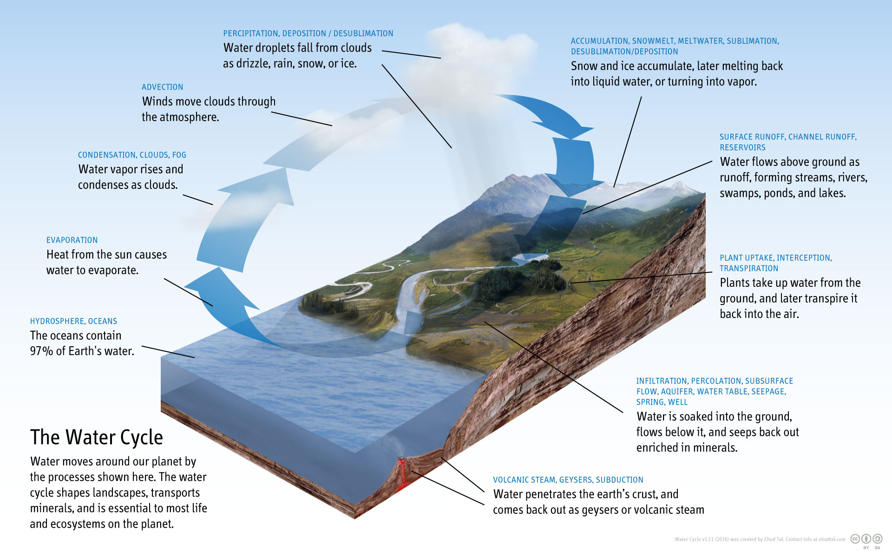
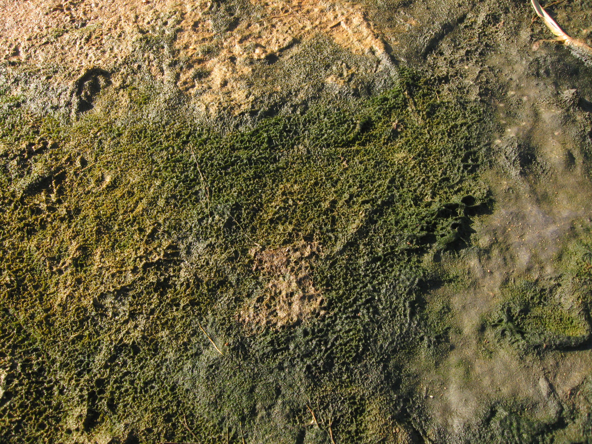
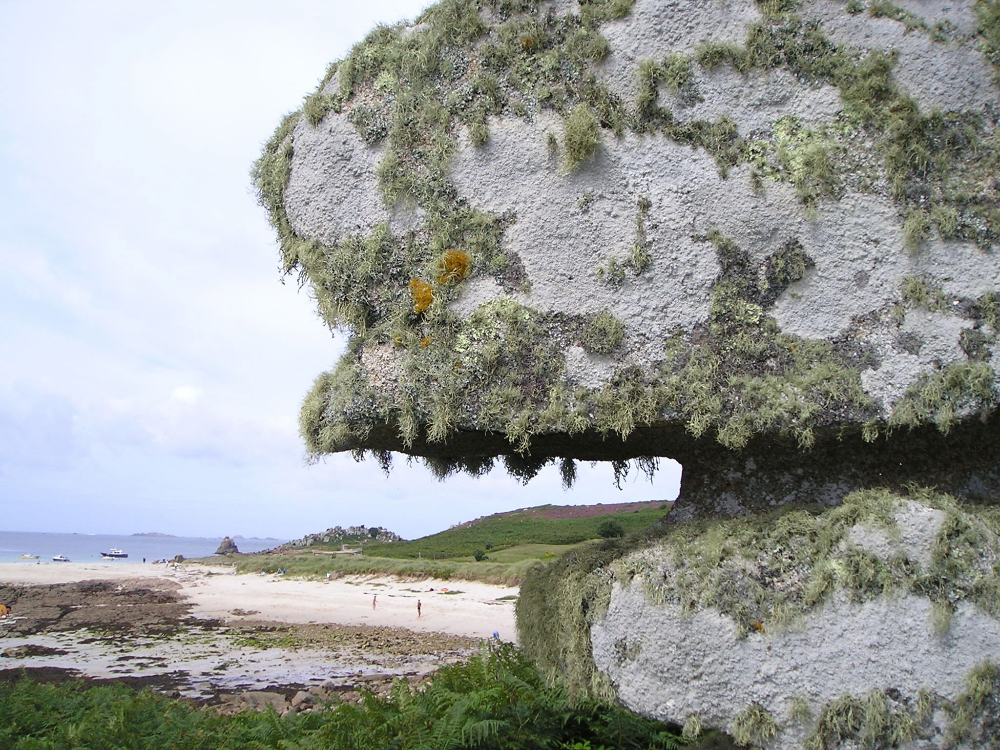

Marine life, or sea life or ocean life, is the plants, animals and other organisms that live in the salt water of the sea or ocean, or the brackish water of coastal estuaries. At a fundamental level, marine life affects the nature of the planet.
Marine organisms produce oxygen and sequester carbon. Shorelines are in part shaped and protected by marine life, and some marine organisms even help create new land. The term marine comes from the Latin mare, meaning sea or ocean.Water
There is no life without water. It has been described as the universal solvent for its ability to dissolve many substances,and as the solvent of life. Water is the only common substance to exist as a solid, liquid, and gas under conditions normal to life on Earth. The Nobel Prize winner Albert Szent-Györgyi referred to water as the mater und matrix: the mother and womb of life.
Evolution
The Earth is about 4.54 billion years old. The earliest undisputed evidence of life on Earth dates from at least 3.5 billion years ago, during the Eoarchean Era after a geological crust started to solidify following the earlier molten Hadean Eon. Microbial mat fossils have been found in 3.48 billion-year-old sandstone in Western Australia. Other early physical evidence of a biogenic substance is graphite in 3.7 billion-year-old metasedimentary rocks discovered in Western Greenland as well as "remains of biotic life" found in 4.1 billion-year-old rocks in Western Australia. According to one of the researchers, "If life arose relatively quickly on Earth … then it could be common in the universe.
Microorganisms
Microorganisms make up about 70% of the marine biomass. A microorganism, or microbe, is a microscopic organism too small to be recognised with the naked eye. It can be single-celled or multicellular. Microorganisms are diverse and include all bacteria and archaea, most protozoa such as algae, fungi and certain microscopic animals such as rotifers.
Fungi
Over 1500 species of fungi are known from marine environments. These are parasitic on marine algae or animals, or are saprobes feeding on dead organic matter from algae, corals, protozoan cysts, sea grasses, wood and other substrata. Spores of many species have special appendages which facilitate attachment to the substratum. Marine fungi can also be found in sea foam and around hydrothermal areas of the ocean. A diverse range of unusual secondary metabolites is produced by marine fungi.
Origin of Animals
The earliest animals were marine invertebrates, that is, vertebrates came later. Animals are multicellular eukaryotes, and are distinguished from plants, algae, and fungi by lacking cell walls. Marine invertebrates are animals that inhabit a marine environment apart from the vertebrate members of the chordate phylum; invertebrates lack a vertebral column. Some have evolved a shell or a hard exoskeleton.
Go back to the top of the page